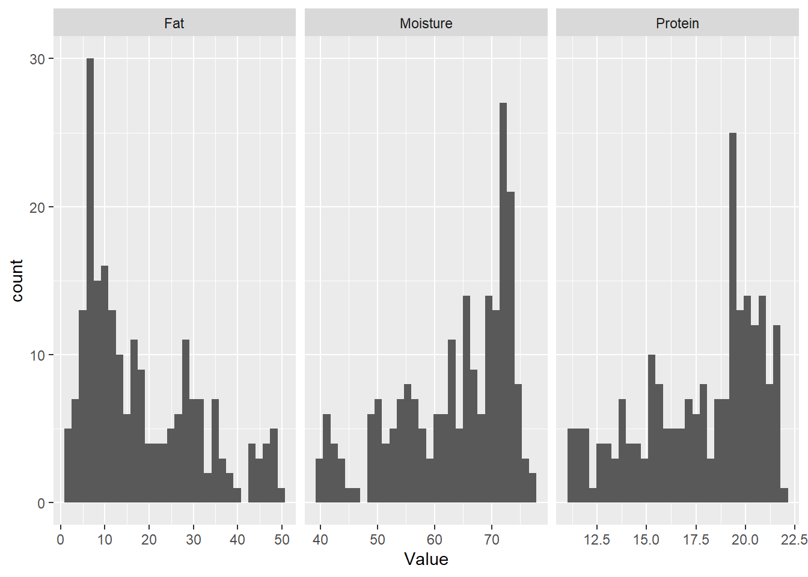
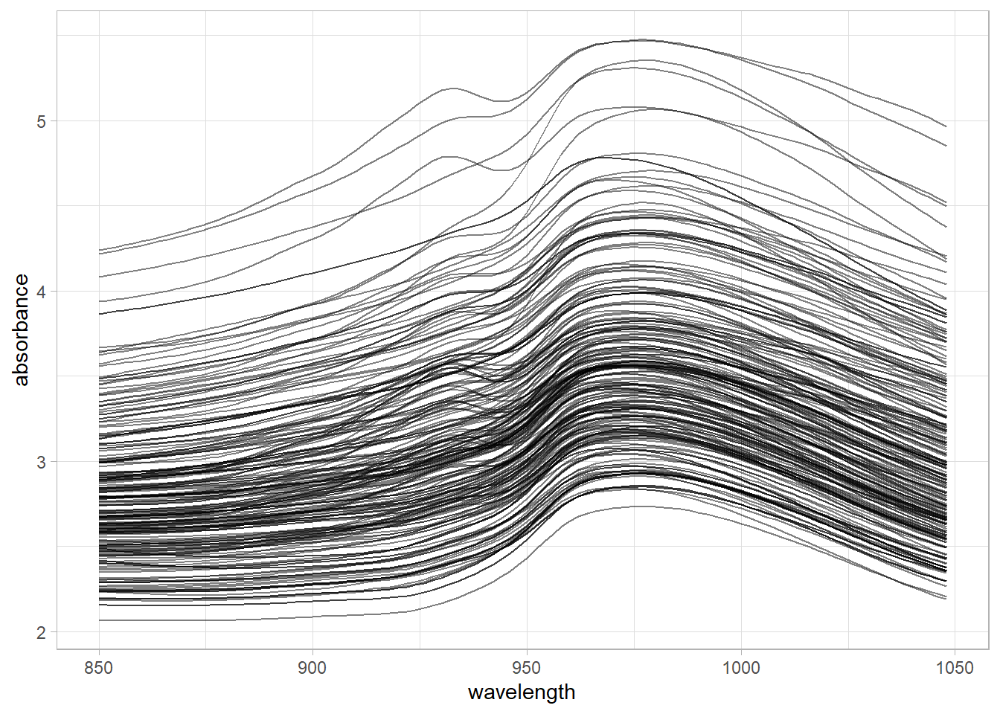

library(tidyverse)
library(modeldata)
load("C:/BLOG/Workspaces/NIT Tutorial/NIT_ws1.RData")
ls()[1] "absorp" "endpoints" "tecator" José Ramón Cuesta
September 28, 2022
First we load the libraries we are going to use, and the “workspace” from the previous post:
[1] "absorp" "endpoints" "tecator" Now we can create another field called “SampleID” as a sequence from 1 to 215 (number of samples), it will be very usefull whenever we use the tecator dataframe:
The tecator data is available as well in the library “modeldata”, but with the name “meats”, so we can load it into the workspace and work with it using the tidyverse and tidymodels libraries. The idea of this tutorial is getting use to work with tidyverse and tidymodels at the same time that with classic R.
The first 100 columns are the wavelengths are the datapoints and the last 3 the parameters, so we can rename de column names, and add an extra column called “SampleID” (same as row number).
Now we can see the histograms with ggplot
We can do the same for moisture and fat, but with some code we can see all the histograms at the same time:
meats %>%
select(SampleID, Moisture, Fat, Protein) %>%
pivot_longer(cols = Moisture:Protein,
names_to = "Parameter",
values_to = "Value") %>%
mutate(Parameter = as.factor(Parameter)) %>%
ggplot(aes(Value)) +
geom_histogram() +
facet_wrap(~ Parameter, scales = "free_x")`stat_bin()` using `bins = 30`. Pick better value with `binwidth`.
In order to see the spectra with ggplot we pivot longer meats data grouping by SampleID:
meats_longer <-
meats %>%
pivot_longer(cols = c(2:101),
names_to = "wavelength",
values_to = "absorbance") %>%
mutate(wavelength = as.integer(str_extract(wavelength, "[:digit:]+")))
meats_longer %>%
ggplot(aes(x = wavelength, y = absorbance, group = SampleID)) +
geom_line(alpha = 0.5) +
theme_light()
Save the workspace for future use